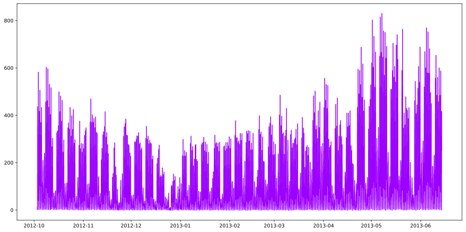

[1]:
import sys
sys.path.insert(0, r"..//..//")
import matplotlib.pyplot as plt
import numpy as np
import pandas as pd
from hotstepper.Steps import Steps
import warnings
warnings.filterwarnings("ignore")
[2]:
df_bike_trips = pd.read_csv(r'..//..//data//Fremont_Bridge_Bicycle_Counter.csv',parse_dates=['Date'])
df_bike_trips.head()
[2]:
| Date | Fremont Bridge Total | Fremont Bridge East Sidewalk | Fremont Bridge West Sidewalk | |
|---|---|---|---|---|
| 0 | 2019-11-01 00:00:00 | 12.0 | 7.0 | 5.0 |
| 1 | 2019-11-01 01:00:00 | 7.0 | 0.0 | 7.0 |
| 2 | 2019-11-01 02:00:00 | 1.0 | 0.0 | 1.0 |
| 3 | 2019-11-01 03:00:00 | 6.0 | 6.0 | 0.0 |
| 4 | 2019-11-01 04:00:00 | 6.0 | 5.0 | 1.0 |
[7]:
bike_trips_bridge_steps = Steps.read_dataframe(df_bike_trips.sort_values(by=['Date']),start='Date',weight = 'Fremont Bridge Total',convert_delta=True)
bike_trips_bridge_steps.plot()
[7]:
<AxesSubplot:>

[8]:
bike_trips_bridge_steps.summary()
---------------------------------------------------------------------------
ValueError Traceback (most recent call last)
<ipython-input-8-75aa249cd09b> in <module>
----> 1 bike_trips_bridge_steps.summary()
c:\SourceCode\TestCode\gode\in progress\HotStepper\hotstepper\mixins\StepsPlottingMixin.py in summary(self)
126 self.plot(ax=axr1)
127 self.smooth_plot(ax=axr1,color='g',linewidth=3)
--> 128 self.histogram_plot(ax=axr23)
129 self.ecdf_plot(ax=axr21)
130
c:\SourceCode\TestCode\gode\in progress\HotStepper\hotstepper\mixins\StepsPlottingMixin.py in histogram_plot(self, number_of_bins, axis, precision, ts_grain, ax, **kargs)
84
85 def histogram_plot(self, number_of_bins=20,axis=0,precision=1,ts_grain = None,ax=None,**kargs):
---> 86 x,y = histogram(self, number_of_bins=number_of_bins,axis=axis,ts_grain = ts_grain)
87
88 if kargs.get('kind') is None:
c:\SourceCode\TestCode\gode\in progress\HotStepper\hotstepper\analysis\statistics.py in histogram(st, number_of_bins, axis, ts_grain)
93 rang = np.arange(min_value,max_value+interval,interval).astype(pd.Timedelta)
94 else:
---> 95 rang = np.arange(min_value,max_value+interval,interval)
96
97 return rang, [sum(np.where((data >= i) & (data < i+interval),1/length,0)) for i in rang]
ValueError: arange: cannot compute length
[ ]: